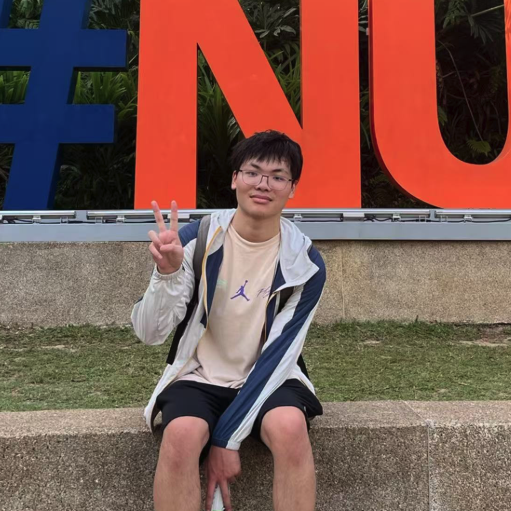

üëã About Me
I am a senior undergraduate student at Zhejiang University, pursuing a Bachelor of Engineering in Computer Science and Technology with Honors from Chu Kochen Honors College. I expect to graduate in June 2026.
rank: 2/147 · GPA: 93.6/100
Currently, I am a research intern at the Berkeley AI Research (BAIR) Lab, UC Berkeley, advised by Dr. Xudong Wang and Prof. Trevor Darrell.
My research interests lie in Computer Vision, Generative Models and Multimodal. Specifically, I'm now exploring Unified Multimodal Models, Video Generation and World Model.
üìù Selected Publications
üé§ Invited Talks
"Reconstruction Alignment Improves Unified Multimodal Model"
Apple Research · Invited Talk · Hosted by Chen Chen and Yinfei Yang
üèÜ Selected Honors
SenseTime Scholarship
Top 30 recipients annually in China
International Collegiate Programming Contest (ICPC), regional, 2022
Gold Medal
China Collegiate Programming Contest (CCPC), regional, 2022
Gold Medal
üéµ Miscellaneous
I was a member of the ZJU ACM/ICPC team and achieved a rating of 2478 on Codeforces. You can find my old blog here — it contains my competitive-programming notes :)